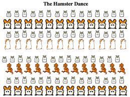
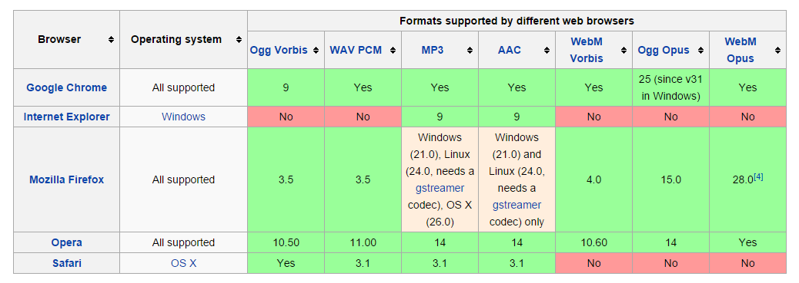
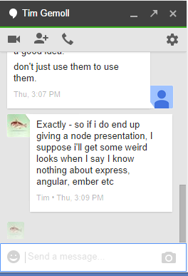

Stories of Web Audio by the Campfire
Created by Tony Gemoll
Bio
Tony Gemoll
Blog: http://geekwithopinions.com
Twitter: @Oobert
The "Old" days of audio

Things got better

Then Came

Audio Element Support
Simple Audio Element
<audio src="loudpipes.mp3" controls>
<source src="loudpipes.mp3" type="audio/mpeg" />
<source src="loudpipes.ogg" type="audio/ogg"/>
Your browser does not support the <code>audio</code> element.
</audio>
Audio Element via JS
var audio = new Audio('loudpipes.mp3');
function play(){
audio.play();
}
function stop(){
audio.pause();
}
Audio Codec Support
Check Support in JS
var audio = new Audio();
var canPlay = audio.canPlayType("audio/mp3")
//"" - browser does not support this type.
//maybe - browser may support this type.
//probably - browser most likely supports this type
Web Audio API Support
How it works
Sources
- OscillatorNode
- AudioBufferSourceNode
- MediaElementAudioSourceNode
- MediaStreamAudioSourceNode
Destinations
- AudioDestinationNode
- MediaStreamAudioDestinationNode
- Recorder.js
Filters/Effects
- AnalyserNode
- DelayNode
- GainNode
- ScriptProcessorNode
- Plus many others
Demo
Audio PlaygroundList of nodes
Example of a node
Load file via APIs
var source = audioContext.createBufferSource();
var audioContext = new (window.AudioContext || window.webkitAudioContext)();
function getData() {
var request = new XMLHttpRequest();
request.open('GET', 'loudpipes.mp3', true);
request.responseType = 'arraybuffer';
request.onload = function() {
var audioData = request.response;
audioContext.decodeAudioData(audioData, function(buffer) {
var myBuffer = buffer;
source.buffer = myBuffer;
source.connect(audioContext.destination);
source.loop = true;
}
}
request.send();
}
function play(){
source.start(0);
}
function stop(){
source.stop(0);
}
getData();
Using audio nodes
HTML
JS
var audio = new Audio('loudpipes.mp3');
var audioContext = new (window.AudioContext || window.webkitAudioContext)();
var sourceNode = audioContext.createMediaElementSource(audio)
var gainNode = audioContext.createGain();
gainNode.gain.value = .5;
sourceNode.connect( gainNode );
gainNode.connect( audioContext.destination );
audio.play();
volume.oninput = function(a){
gainNode.gain.value = volume.value;
}
JS Processing example
var audio = new Audio('test.mp3');
var audioContext = new (window.AudioContext || window.webkitAudioContext)();
var sourceNode = audioContext.createMediaElementSource(audio)
var processor = audioContext.createScriptProcessor(2048, 1, 1);
sourceNode.connect(processor);
sourceNode.connect( audioContext.destination );
processor.connect(audioContext.destination)
var shot = false;
var shotCount = 0;
var shots = [];
processor.onaudioprocess = function(e){
var input = e.inputBuffer.getChannelData(0);
var total = 0;
for (var index = 0; index < input.length; index++){
total += Math.abs(input[index]);
}
var rms = Math.sqrt(total/input.length);
var decibel = 20 * (Math.log(rms) / Math.log(10));
if (decibel > -7 && !shot) {
console.log('shot', shotCount);
shotCount++;
shot = true;
shots.push(performance.now());
}
else if (decibel < -8 ){
shot = false;
}
};
audio.play();
Performance?
Touch!Jam with friends!
Plink!
Uses?
Record Audio
Demo
/*Get user media (mic access)*/
if (!navigator.getUserMedia)
navigator.getUserMedia = navigator.webkitGetUserMedia || navigator.mozGetUserMedia;
if (!navigator.cancelAnimationFrame)
navigator.cancelAnimationFrame = navigator.webkitCancelAnimationFrame || navigator.mozCancelAnimationFrame;
if (!navigator.requestAnimationFrame)
navigator.requestAnimationFrame = navigator.webkitRequestAnimationFrame || navigator.mozRequestAnimationFrame;
navigator.getUserMedia({audio:true}, gotStream, function(e) {
alert('Error getting audio');
console.log(e);
});
function gotStream(stream){
var source = audioContext.createMediaStreamSource(stream);
...
}
Recorder.js
Visualisations
Visualisation!Games!
Games!No Really Games!
Notifications
What about DRM?
Encrypted Media ExtensionsSupport:
- IE11 in Win8.1
- Chrome (Desktop and mobile)
- Safari 8 in OSX Yosemite
END
Blog: http://geekwithopinions.comTwitter: @Oobert